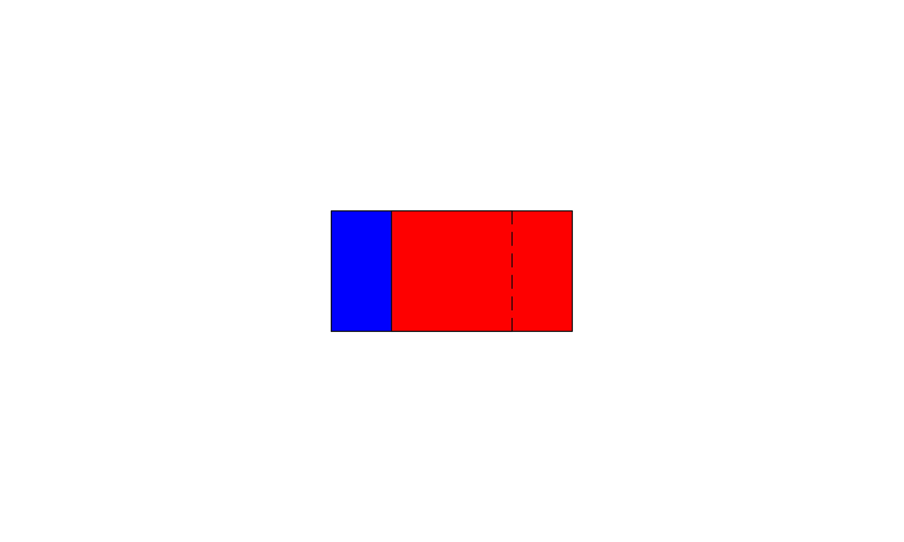

|
因为TeXmacs的介绍资料不多，所以打算边学边写，写一系列用
本文对读者的基本要求就是熟悉TeXmacs的基本使用和
注意
本文的交互式代码的执行假定读者是一次性从上到下读完全文，当然这是不现实的，所以附录的小贴士建议优先阅读，以方便你第二次阅读本文中末节时快速进入状态。
首先，假设我们已经了解到：一篇TeXmacs文档实际上就是一长串
通过
| Scheme] | (define (plot l) (stree->tree l)) ;按下回车，定义这个函数 |
一串
| 1 |
| 2 |
的内部表示实际上就是(frac 1 2)。于是，在
Scheme] |
(plot ‘(frac 1 2)) ;光标放在这行上，按下回车就能得到1/2 |
上面介绍的原语frac实际上用于数学模式，下面我们介绍图形模式下的原语。先全部列出来：
|
接着，我们在这些原语
4. 这些原语的代码实现可以在src/Graphics/Types/下找到
| Scheme] | (define (point x y) ; number->string的作用是将树变成文档中表示数据的字符串 ‘(point ,(number->string x) ,(number->string y))) |
| Scheme] | (define (point.x point) (string->number (list-ref point 1))) |
| Scheme] | (define (point.y point) (string->number (list-ref point 2))) |
| Scheme] |
(define (line . points)
(cond ((nlist? points) ‘())
((== points '()) ‘())
(else ‘(line ,@points)))) |
| Scheme] |
(define (rectangle leftdown rightup)
(let ((leftup (point (point.x leftdown) (point.y rightup)))
(rightdown (point (point.x rightup) (point.y leftdown))))
‘(cline ,leftdown ,leftup ,rightup ,rightdown))) |
| Scheme] |
(define (circle center radius)
(let ((p1 (point (- (point.x center) radius) (point.y center)))
(p2 (point (point.x center) (+ (point.y center) radius)))
(p3 (point (+ (point.x center) radius) (point.y center))))
‘(carc ,p1 ,p2 ,p3))) |
用plot绘制点、矩形和圆：
Scheme] |
(plot (point 0 0)) |
Scheme] |
(plot (rectangle (point 0 0) (point 1 1))) |
Scheme] |
(plot (circle (point 0 0) 1)) |
使用
Scheme] |
(plot ‘(with color "red" fill-color "#eeeeee" ,(circle (point 0 0) 1))) |
Scheme] |
(plot ‘(with arrow-begin "<gtr>" dash-style "11100" ，(line (point 0 1) (point 0 0) (point 1 1)))) |
Scheme] |
(plot ‘(with point-style "star" ,(point 0 0))) |
根据源码
5. TeXmacs/progs/graphics/graphics-drd.scm
|
光看表格中的总结不免失之直观，推荐阅读
下面，定义一些函数，方便我们操纵上一节中点、圆和矩形的样式。首先是颜色，我们定义fill来设置背景色，定义colorize来设置前景色。粗糙的想法是在图形对象前增加
| Scheme] |
(define (merge-with l par val subs)
(cond ((== (length l) 0) '())
((== (length l) 1) (append (list par val) l))
((== par (car l))
(if subs (set-car! (cdr l) val)) l)
(else
(let ((t (list (car l) (cadr l))))
(append t (merge-with (cddr l) par val subs)))))) |
| Scheme] |
(define (decorate l par val subs)
(cond ((or (nlist? l) (null? l)) '())
((list? (car l))
(append (list (decorate (car l) par val subs))
(decorate (cdr l) par val subs)))
((== (car l) 'with)
(append '(with) (merge-with (cdr l) par val subs)))
((or (== (car l) 'line) (== (car l) 'cline) (== (car l) 'carc) (== (car l) 'point) (== (car l) 'graphics))
(append '(with) (merge-with (list l) par val subs))))) |
| Scheme] | (define (fill fig bc) (decorate fig "fill-color" bc #f)) |
| Scheme] | (define (force-fill fig bc) (decorate fig "fill-color" bc #t)) |
| Scheme] | (define (colorize fig fc) (decorate fig "color" fc #f)) |
| Scheme] | (define (force-colorize fig fc) (decorate fig "color" fc #t)) |
| Scheme] | (define (arrow-begin fig style) (decorate fig "arrow-begin" style #f)) |
| Scheme] | (define (force-arrow-begin fig style) (decorate fig "arrow-begin" style #t)) |
| Scheme] | (define (arrow-end fig style) (decorate fig "arrow-end" style #f)) |
| Scheme] | (define (force-arrow-end fig style) (decorate fig "arrow-end" style #t)) |
| Scheme] | (define (dash-style fig style) (decorate fig "dash-style" style #f)) |
| Scheme] | (define (force-dash-style fig style) (decorate fig "dash-style" style #t)) |
Scheme] |
(plot (dash-style (fill (colorize (circle (point 0 0) 1) "blue") "green") "1111010")) |
Scheme] |
(plot (arrow-end (line (point -2 0) (point 0 0) (point 1 1)) "|<gtr>")) |
前文所作之图，我们都只是将图形对象生成出来TeXmacs文档树放在
left
由此可以知道，在没有画布的情况下，TeXmacs会分配一个动态大小的画布，以适应图形的尺寸。
前文中的图像都只是单个图形对象在默认画布上的显示。引入画布之后，我们就可以将多个图形对象叠加在同一个画布上。通过逆向工程
6. 方法请参考附录中的小贴士
| Scheme] |
(define (graphics . objects)
(cond ((nlist? objects) '(graphics "" ""))
((== objects '()) '(graphics "" ""))
(else ‘(graphics "" ,@objects)))) |
| Scheme] | (define (geometry fig x y) (decorate fig "gr-geometry" ‘(tuple "geometry" ,x ,y "center") #f)) |
Scheme] |
(plot (geometry (graphics
(fill (rectangle (point -2 -1) (point 1 1)) "blue")
(fill (rectangle (point -1 -1) (point 2 1)) "red")
(dash-style (line (point 1 -1) (point 1 1)) "11100"))
"5cm" "3cm")) |

现在我们就能够用函数graphics，将多个图形对象叠加在同一个画布上，而且，图形对象的顺序决定了渲染的顺序，后者会覆盖前者。如上图所示，虚线表示原来蓝色矩形的右边界，现在被红色矩形覆盖了。
而geometry函数可以控制画布的大小。注意，前文中都没有讨论长度单位这一因素。但实际上前文中所有的坐标的单位都是cm。所以在指定画布的宽度和高度的时候，我们需要加上cm这个单位，因为这里的默认单位不是cm。
另外，我们还可以剪裁画布，尽可能减少画布周围的空白。
| Scheme] | (define (crop fig) (decorate fig "gr-auto-crop" "true" #f)) |
Scheme] |
(plot (crop (graphics
(fill (rectangle (point -2 -1) (point 1 1)) "blue")
(fill (rectangle (point -1 -1) (point 2 1)) "red")
(dash-style (line (point 1 -1) (point 1 1)) "11100")))) |
选中最近的这两个一样的图像，你就可以看到区别。
这一章主要利用前文定义好的函数，绘制各种各样有趣的图案。
将半径为R的圆周n等分，然后用直线将各个等分点两两相连。
将半径为的圆周n等分，然后以每个等分点为圆心，以为半径画n个圆。
当你刚刚用编辑器打开本文时，如果你跳到中间的某节去执行代码，很有可能会出错，因为当前的代码很有可能依赖上前文中已经出现过的函数和变量。而将前文中所有的代码都执行一遍这个操作实际上非常繁琐。启用
A TeXmacs graphics tutorial
Turtle schemes
Fractal turtles